Objetivo general
¿Qué es el proyecto PAPIME PE101825?
Desarrollar un espacio web educativo, inmersivo e innovador que integre una colección de tres mundos virtuales o metaversos específicamente diseñados para el aprendizaje de las Ciencias de la Tierra. Estos mundos virtuales estarán equipados con una amplia gama de materiales digitales, que incluyen infografías, recorridos 360°, animaciones, videos y modelos 3D, destinados a fortalecer la enseñanza.
El sitio web permite a profesores y estudiantes interactuar en tiempo real a través de laptops, tabletas o teléfonos celulares, tanto en el aula como desde cualquier lugar geográfico, ofreciendo una experiencia de aprendizaje más dinámica y enriquecedora.
Este recurso es fundamental para apoyar la enseñanza en asignaturas clave como Geología General, Geología Física, Petrología, Mineralogía, Sedimentología y Geomorfología, así como en Ingeniería Ambiental e Ingeniería Civil.
Equipo académico
Académicos participantes
Responsable del proyecto
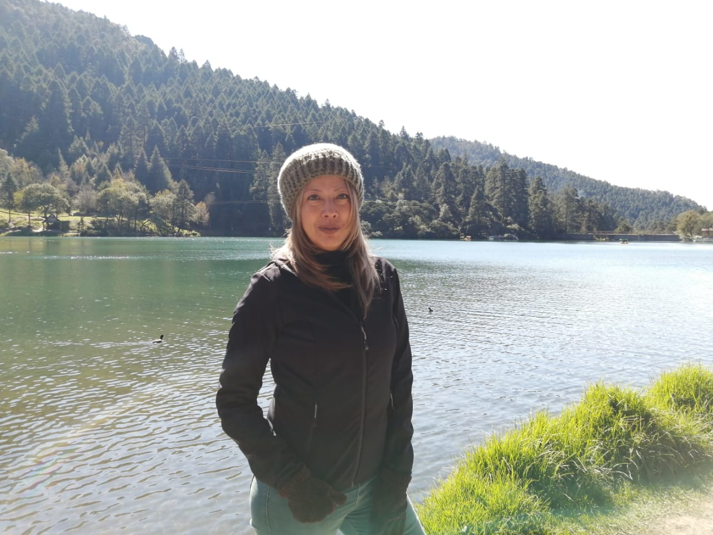
Dra. Mayumy Amparo Cabrera Ramírez
Responsable · Técnica académica titular C
Dpto. de Geología, FI/UNAM
mayumycr@unam.mx
- Erosión costera
- Recursos submarinos
- Sedimentología de zonas costeras
- Modelado 3D y fotogrametría
- Metaversos y aulas virtuales para la docencia
Corresponsable del proyecto
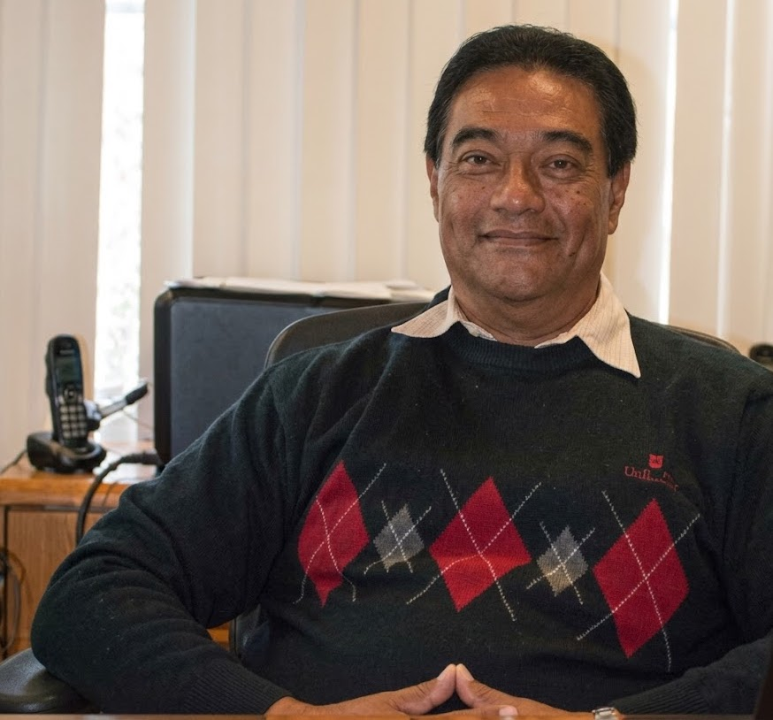
M.P. Jesús Ramírez Ortega
Corresponsable · Técnico académico titular B
ICAT/UNAM
jesus.ramirez@icat.unam.mx
- Diseño y evaluación de espacios educativos interactivos
- Contenidos y plataformas informáticas de apoyo a la educación
Colaboradores · Facultad de Ingeniería, UNAM
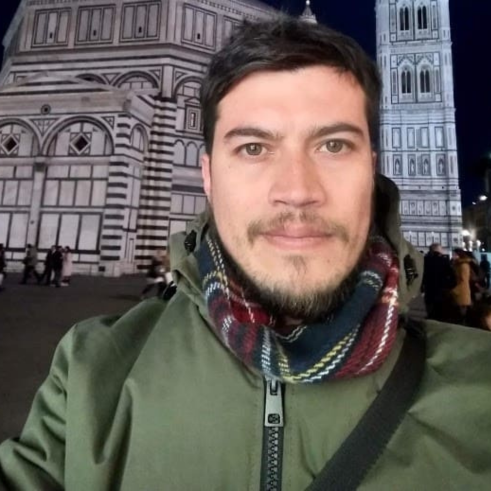
M.C. Luis Andrés Salinas Omassi
Profesor de asignatura A · Dpto. de Geología
- Análisis costero: erosión, transporte y acumulación de sedimentos
- Impacto del oleaje y tsunamis en el Pacífico Mexicano
- Geotecnologías aplicadas al análisis geomorfológico

Dr. Luis Bruno Garduño Castro
Profesor de asignatura A · Dpto. Fotogrametría, DICYG
- Levantamiento fotogramétrico con drones
- Realidad aumentada
- Representación cartográfica
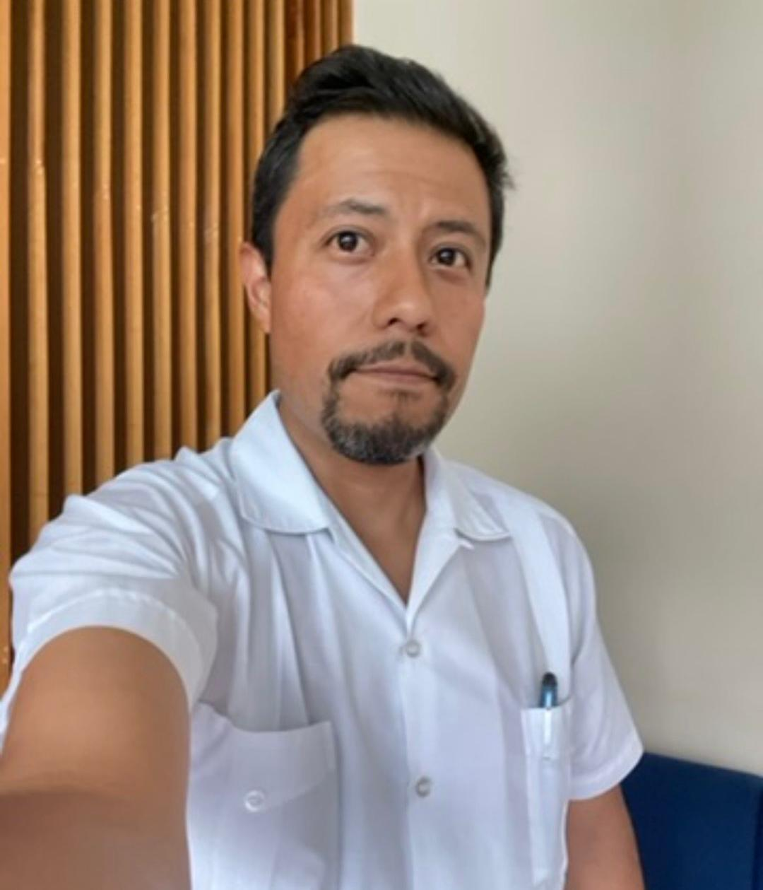
M. en C. Sergio Salinas Sánchez
Profesor de asignatura · FFyL/UNAM
- Geomorfología estructural
- Dinámica del relieve terrestre
- Sistemas de Información Geográfica (SIGs)
Colaboradores · ICAT, UNAM
M.D.I. Alethia Patricia Estrella Ruíz
Técnica académica asociada C
- Administración de servidores Linux
- Seguridad para servidores web
- TIC para automatización de procesos
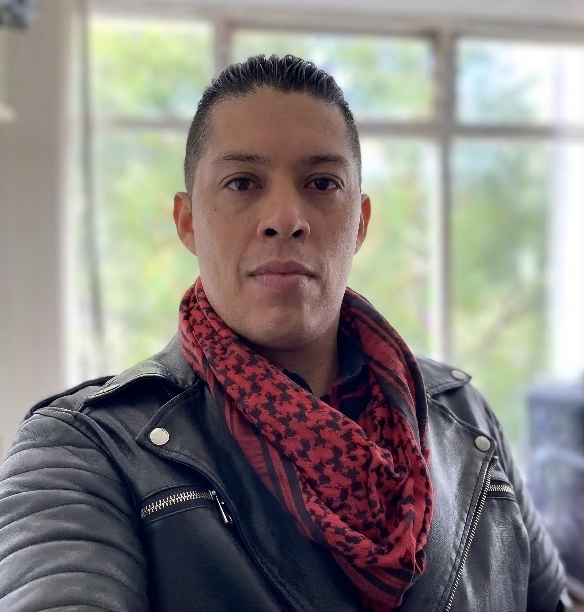
M.D.I. Edcel Fuerte Martínez
Técnico académico asociado C
- Administración de servidores Linux
- Seguridad para servidores web
- TIC para automatización de procesos
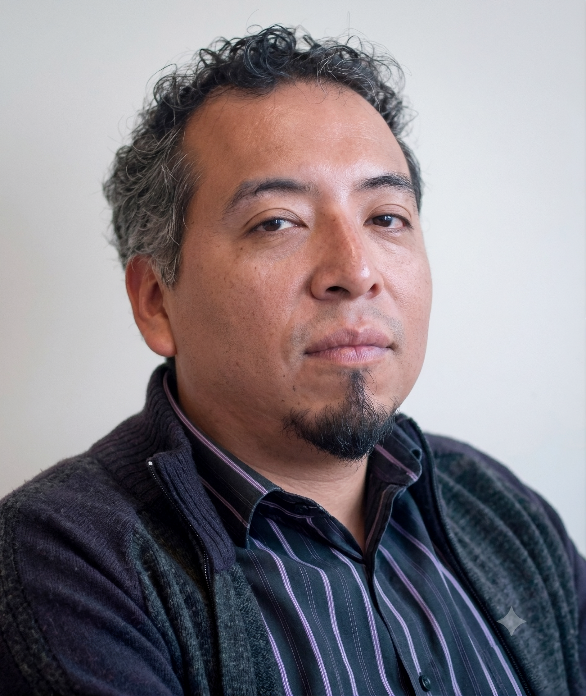
Dr. Gustavo de la Cruz Martínez
Técnico académico titular C
- Diseño y evaluación de experiencia del usuario (UX)
- Modelado cognitivo del usuario
- Espacios interactivos y educación no formal
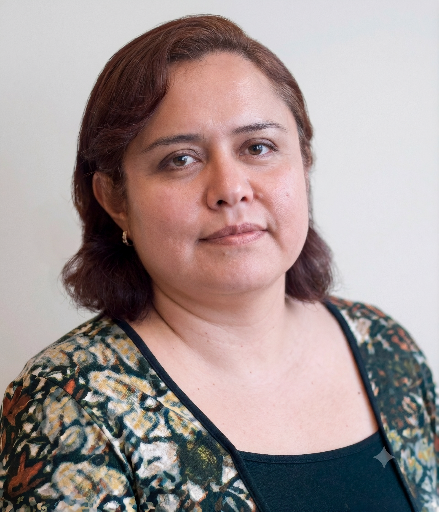
M.D.A. Ana Libia Eslava Cervantes
Técnica académica titular A
- Diseño y evaluación de experiencia del usuario
- Espacios interactivos y educación no formal
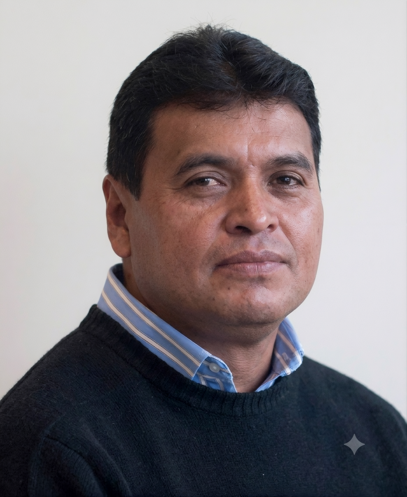
Dr. Ricardo Castañeda Martínez
Técnico académico titular A
ricardo.castaneda@icat.unam.mx
- Diseño y evaluación de espacios educativos interactivos
- Contenidos y plataformas de apoyo a la educación
- Didáctica e innovación de productos educativos
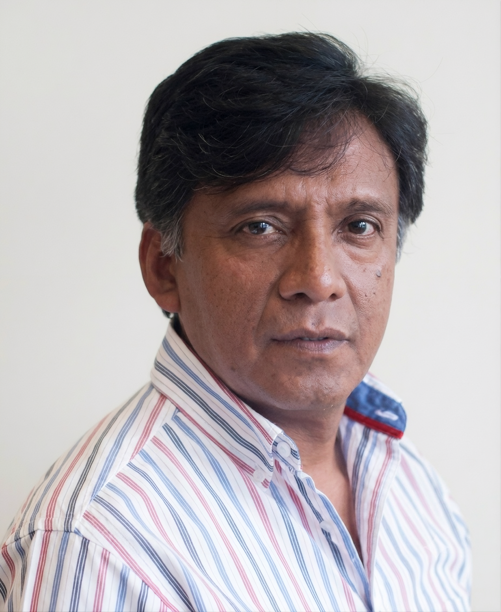
Dr. J. Antonio Domínguez Hernández
Técnico académico titular C
antonio.dominguez@icat.unam.mx
- Competencias digitales para la docencia y divulgación
- Contenidos y plataformas de apoyo a la educación
Próximamente
—
Alumnos participantes
Estudiantes colaboradores
Desarrollo y tecnología
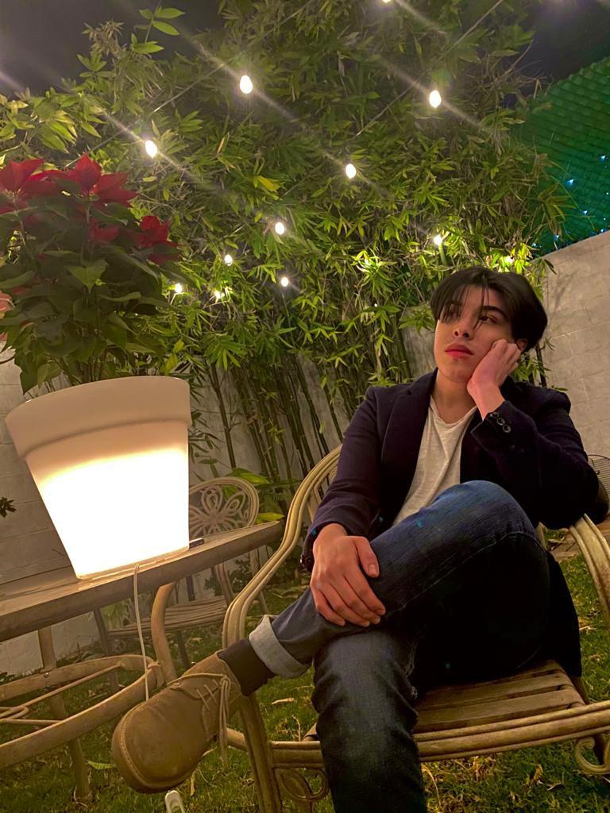
Octavio Ortega Novoa
Ing. en Computación · FI/UNAM
- Desarrollo de videojuegos
- Inteligencia artificial
- Ajedrez
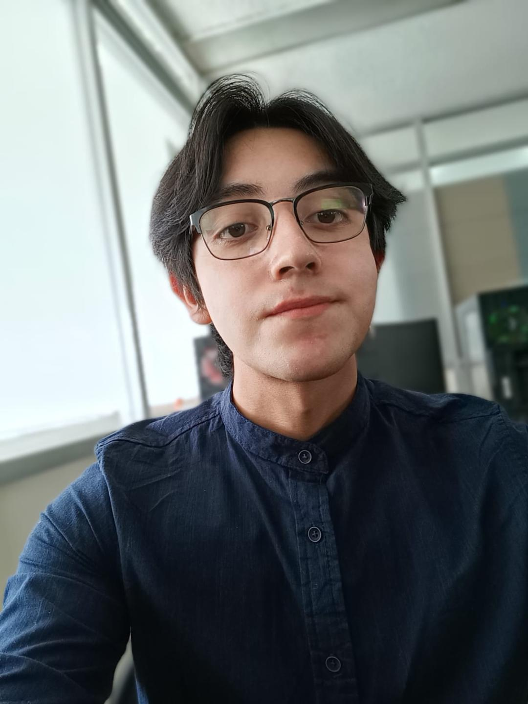
Carlos Eduardo Vences Santillán
Ing. en Computación · FI/UNAM
- Gestión de proyectos
- Creación de software interactivo
- Gastronomía, música y expresión cultural
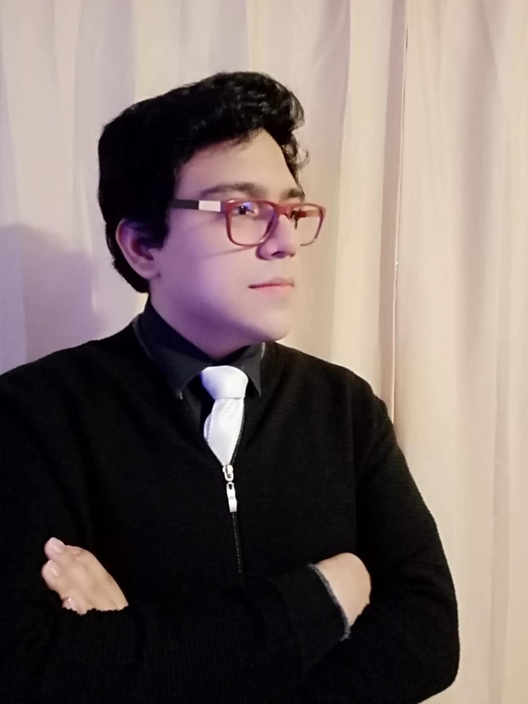
Sebastián Buendía López
Ing. en Computación · FI/UNAM
- Desarrollo de videojuegos e IA
- Composición musical
- Literatura
Próximamente
—
Diseño y ciencias
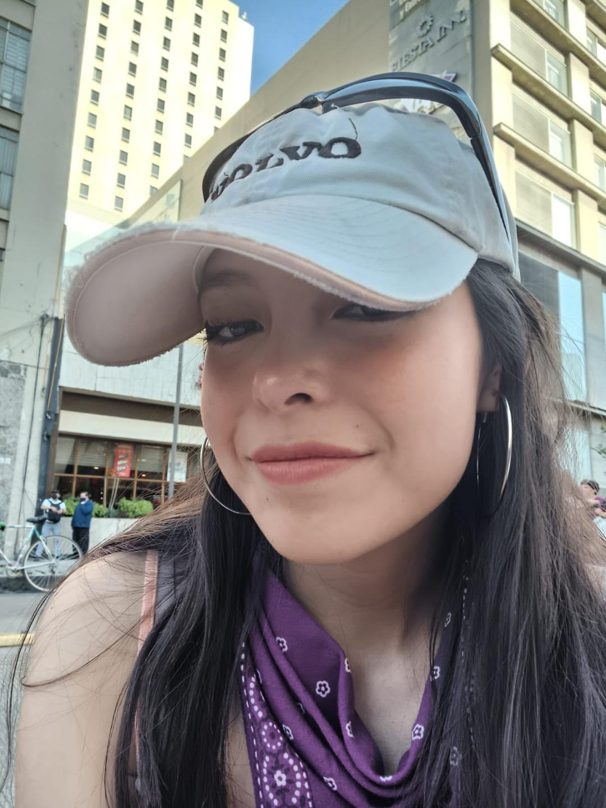
Diana Alejandra Sánchez Yáñez
Arquitectura · FA/UNAM
- Diseño y modelado 3D
- Lectura y dibujo
- Ejercicio

Cinthya Merari González Romero
Geografía · FFyL/UNAM
- Geomorfología y Geología
- Dibujo científico
- Artes en general
Próximamente
—
Creación de contenido y redes sociales
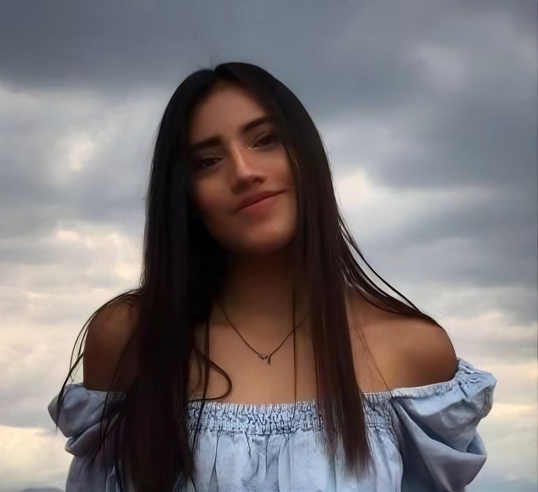
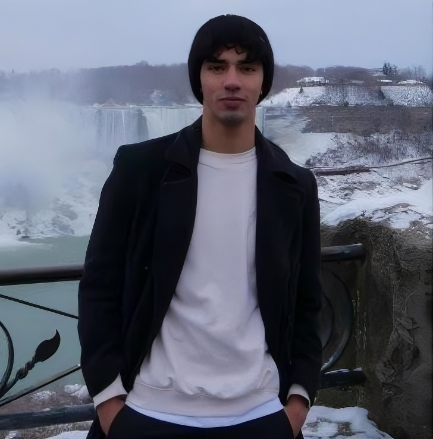
Mauricio Jaramillo
FI/UNAM
- Manejo de redes sociales
- Story Maker
- Contenido audiovisual
- @mauriciocabrera_ig
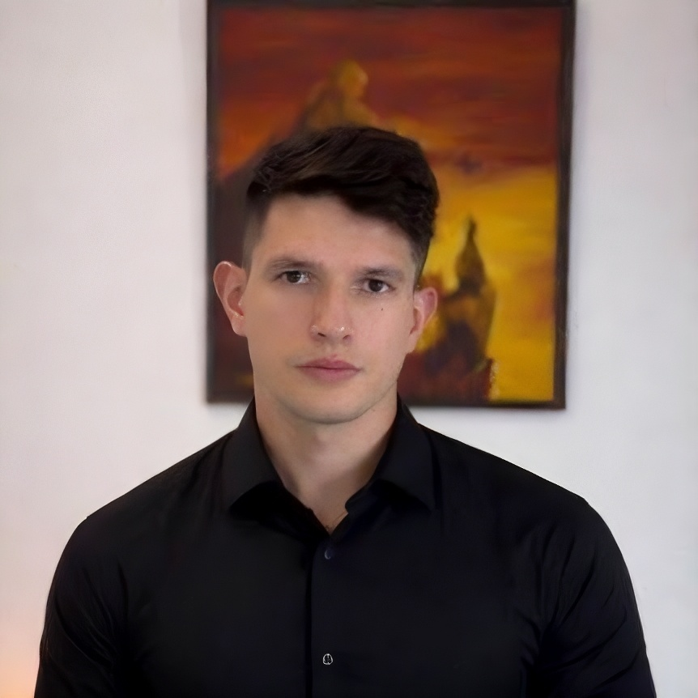
Próximamente
—
Agradecimientos
Apoyo institucional
Este proyecto fue posible gracias al apoyo de la Dirección General de Asuntos del Personal Académico de la Universidad Nacional Autónoma de México.